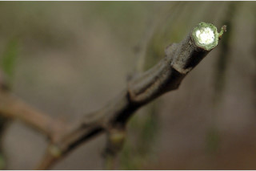
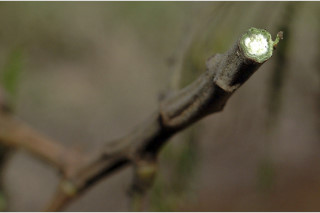

Shrubs to small trees, up to 10 m tall.
ಪೊದೆಗಳು ಅಥವಾ 10 ಮೀ. ಎತ್ತರದವರೆಗೆ ಬೆಳೆಯುವ ಸಣ್ಣ ಮರಗಳು.
Shrubs to small trees, up to 10 m tall.
பெரிய குத்துச்செடி முதல் சிறிய மரம் 10 மீ. உயரம் வரை வளரக்கூடியது.
Young branchlets angular, rusty tomentose.
ಎಳೆಯ ಕಿರುಕೊಂಬೆಗಳು ಕೋನಯುಕ್ತವಾಗಿದ್ದು ಕಿಲುಬು ಬಣ್ಣದ ದಟ್ಟ ಮೃದು ತುಪ್ಪಳದಿಂದ ಕೂಡಿರುತ್ತವೆ.
Young branchlets angular, rusty tomentose.
சிறிய நுனிக்கிளைகள் குறுக்குவெட்டுத் தோற்றத்தில் கோணங்களுடையது, துரு உரோமங்களுடையது.
Leaves compound, bipinnate, paripinnate, alternate, spiral; stipules caducous; rachis 5-16 cm long, pulvinate, round sessile glands on the upper side, rusty tomentose; pinnae 3-12 pairs, opposite, tomentose; leaflets numerous, small, sessile, 0.6-0.9 x 0.2 cm, oblong to oblong - trapezoid, apex acute and mucronate, base asymmetric, margin entire and recurved, coriaceous, tawny-villous beneath; midrib canaliculate; secondary_nerves 4-6 pairs; tertiary_nerves obscure.
ಎಲೆಗಳು ಸಂಯುಕ್ತ, ದ್ವಿಗರಿ ಹಾಗೂ ಸಮ ಸಂಖ್ಯಾ ಗರಿ ರೂಪಿಗಳಾಗಿದ್ದು ಪರ್ಯಾಯ ಮತ್ತು ಸುತ್ತು ಜೋಡನಾ ವ್ಯವಸ್ಥೆಯಲ್ಲಿರುತ್ತವೆ ;ಕಾವಿನೆಲೆಗಳು ಅಸ್ಥಿರವಾಗಿರುತ್ತವೆ;ನಡುಕಾಂಡ 5 -6 ಸೆಂ.ಮೀ.ಉದ್ದವಿದ್ದು,ಉಬ್ಬಿದ ಎಲೆ ಬುಡವನ್ನು ಹೊಂದಿದ್ದು ಮೇಲ್ಭಾಗದಲ್ಲಿ ದುಂಡಾದ, ತೊಟ್ಟುರಹಿತವಾದ ರಸಗ್ರಂಥಿಗಳ ಸಮೇತವಿದ್ದು ತುಕ್ಕು ಬಣ್ಣದ ದಟ್ಟ ಮೃದು ತುಪ್ಪಳದಿಂದ ಕೂಡಿರುತ್ತವೆ; ಗರಿಗಳು 3 ರಿಂದ 12 ಜೋಡಿಗಳಿದ್ದು ಅಭಿಮುಖಿಗಳಾಗಿದ್ದು ದಟ್ಟ ಮೃದು ತುಪ್ಪಳ ಸಹಿತವಿರುತ್ತವೆ;ಕಿರು ಎಲೆಗಳು ಹೆಚ್ಚಿನ ಸಂಖ್ಯೆಯಲ್ಲಿದ್ದು,ಚಿಕ್ಕ ಗಾತ್ರದವು ಹಾಗೂ ತೊಟ್ಟು ರಹಿತವಾಗಿರುತ್ತಮತ್ತು 0.6-0.9 X 0.2 ಸೆಂ.ಮೀ ಗಾತ್ರ, ಚತುರಸ್ರದಿಂದ ಚತುರಸ್ರ – ವಿಷಮ ಸಮಾನಾಂತರ ಚತುರ್ಭುಜದ ಆಕಾರ , ಚೂಪಾದ ಮತ್ತು ಸೂಕ್ಷ್ಮ ಮೊನಚು ಮುಳ್ಳುಳ್ಳ ತುದಿ ಅಸಮ್ಮಿತಿಯಾದ ಬುಡ,ನಯವಾದ ಮತ್ತು ಹಿಂಬಾಗಿದ ಅಂಚು ಚರ್ಮವನ್ನೋಲುವ ಮೇಲ್ಮೈ, ಕಂದು ಮಿಶ್ರಿತಹಳದಿ ಬಣ್ಣದ ಉದ್ದವಾದ ಮೃದುಗೂದಲಿಂದ ಕೂಡಿದ ತಳಭಾಗ ಹೊಂದಿರುತ್ತವೆ; ಮಧ್ಯನಾಳ ಕಾಲುವೆ ಗೆರೆ ಸಮೇತವಿರುತ್ತದೆ;ಎರಡನೇ ದರ್ಜೆಯ ನಾಳಗಳು 4 ರಿಂದ 6;ಮೂರನೇ ದರ್ಜೆಯ ನಾಳಗಳು ಅಸ್ಪಷ್ಟ.
Leaves compound, bipinnate, paripinnate, alternate, spiral; stipules caducous; rachis 5-16 cm long, pulvinate, round sessile glands on the upper side, rusty tomentose; pinnae 3-12 pairs, opposite, tomentose; leaflets numerous, small, sessile, 0.6-0.9 x 0.2 cm, oblong to oblong - trapezoid, apex acute and mucronate, base asymmetric, margin entire and recurved, coriaceous, tawny-villous beneath; midrib canaliculate; secondary_nerves 4-6 pairs; tertiary_nerves obscure.
கூட்டிலை, இருமுறை கிளைத்த சிறகுவடிவக்கூட்டிலை (பைபின்னேட்), இரட்டைபடை சிறகுவடிவக்கூட்டிலை (பேரிப்பின்னேட்), மாற்றுஅடுக்கமானவை, சுழல் போல் அமைந்தது; இலையடிச்செதில் எளிதில் உதிரக்கூடியது; மத்தியகாம்பு 5-16 செ.மீ. நீளமானது, பல்வினேட், வட்டவடிவ காம்பற்ற சுரப்பிகள் மேற்புறத்தில் உடையது, துரு உரோமங்களுடையது; பின்னே 3-12 ஜோடிகள், எதிரடுக்கமானவை, உரோமங்களுடையது; சிற்றிலைகள் எண்ணற்றவை, சிறியவை, காம்பற்றது, 0.6-0.9 X 0.2 செ.மீ., நீள்சதுர வடிவானது முதல் நீள்சதுர-ட்ரப்பிசாய்டு, அலகின் நுனி கூரியது மற்றும் மூயூக்கரனேட், அலகின் தளம் சமமற்றது, அலகின் விளிம்பு முழுமையானது மற்றும் மற்றும் பின்புறம் வளைந்து காணப்படும், கோரியேசியஸ், உரோமங்களுடையது; மையநரம்பு மேற்புறத்தில் அலகின் பரப்பைவிட பள்ளமானது; இரண்டாம் நிலை நரம்புகள் 4-6 ஜோடிகள்; மூன்றாம் நிலை நரம்புகள் கண்களுக்கு புலப்படாது.
Inflorescence clustered heads; flowers sessile, greenish white, stamens white and many.
ಪುಷ್ಪಮಂಜರಿಗಳು ಗುಚ್ಛಗೊಂಡ ಗೋಳಾಕಾರ ಮಂಜರಿ ಮಾದರಿಯವು;ಹೂಗಳು ತೊಟ್ಟು ರಹಿತವಾಗಿದ್ದು ಹಸಿರು ಮಿಶ್ರಿತ ಬಿಳಿ ಬಣ್ಣ ಹೊಂದಿರುತ್ತವೆ,ಕೇಸರಗಳು ಬಿಳಿ ಬಣ್ಣ ಹೊಂದಿದ್ದು ಹೆಚ್ಚಿನ ಸಂಖ್ಯೆಯಲ್ಲಿರುತ್ತವೆ.
Inflorescence clustered heads; flowers sessile, greenish white, stamens white and many.
மஞ்சரி தலை வகை, சிறிய கூட்டமாக காணப்படுபவை; மலர்கள் காம்பற்றது, பச்சை-வெள்ளை நிறமானது, மகரந்தாள் வெள்ளை நிறமானது மற்றும் எண்ணற்றவை.
Pod, 7.5-10 cm long, coriaceous, twisted; seeds 4-12.
ಕಾಯಿಗಳು ಪಾಡ್ ಮಾದರಿಯವುಗಳಾಗಿದ್ದು 7.5 ರಿಂದ 10 ಸೆಂ.ಮೀ. ಉದ್ದ ಮತ್ತು ಚರ್ಮವನ್ನು ಹೋಲುವ ಮೇಲ್ಮೈ ಹೊಂದಿದ್ದು ತಿರುಚಿಕೊಂಡಿರುತ್ತವೆ..
Pod, 7.5-10 cm long, coriaceous, twisted; seeds 4-12.
பாட் கனி (அவரைப்போன்றது), 7.5-10 செ.மீ. நீளமானது, கோரியேசியஸ், திருகியது; விதைகள் 4-12.


 
